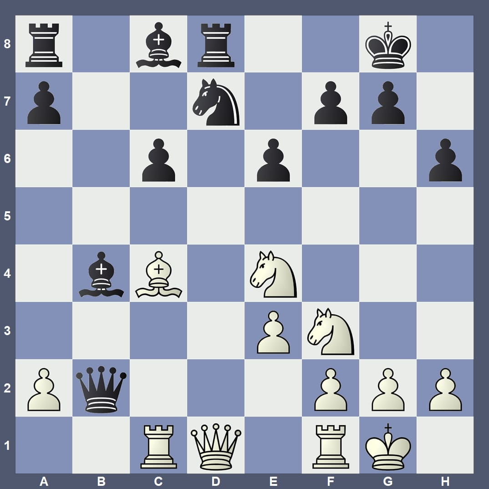

Willkommen
Bitte warten, die Präsentation startet gleich.
Stellungsanalyse

(Audio läuft synchron)
Test beendet
Gleich folgt die AR-Demonstration.
AR-Würfel
Drehe den Würfel mit dem Finger.
Auf dem Handy: Klicke den Button, um ihn in den Raum zu stellen.